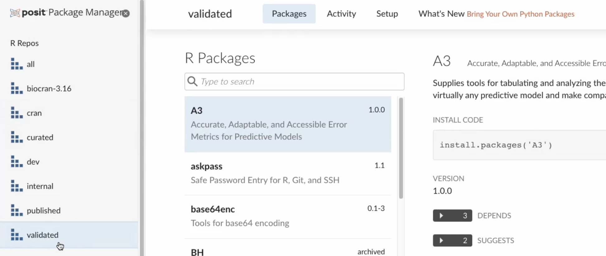

2023-05-31
This is part 4 in our series of blog posts, “What can you do with Posit Connect?”
Posit Connect is a publishing platform for the authenticated sharing of R and Python data products in one convenient place that brings the power of data science to your entire organization. On the last Wednesday of every month, we host a Posit Team demo and Q&A session that is open to all. You can use this link to add the event to your calendar.
Open source is changing how drug development happens. Clinical teams are making better decisions, working through clinical trials more confidently, and bringing life-changing drugs to market faster. One way that teams are doing this is with Shiny.
In a recent Data Science Hangout, the Novartis team shared how they use a Shiny app with a Javascript backend published to Posit Connect to display safety data in a more user-friendly way. This app is used by the Data Monitoring Committee, which includes highly regarded external experts in their field. Moving from their typical 200-page PDFs to a Shiny app has been crucial to making the most effective use of this Data Monitoring Committee members’ time.
The clinical trial data we’ll use for this demo and follow-along blog post is publicly available. It has been properly de-identified and cleansed for demonstration purposes.
As a high-level overview, clinical trials are usually conducted to assess the efficacy of various disease interventions. During the trial, data will be collected, organized, and eventually found inside an analysis-ready dataset called an ADaM or Analysis Data Model dataset. These ADaM datasets are usually what’s submitted to various regulatory agencies, such as the FDA.
This example will focus on an ADaM Subject-Level Dataset (ADSL) and includes things like subject ID number, treatment group, age, body mass index (BMI), height, weight, and years of education.
Given that these datasets contain numerous descriptive columns, it can be a challenge to create static insights such as plots and tables to explore them all. For this reason, we will create an interactive web application using Shiny.
You can access the GitHub repo for this example (including the Shiny app and dataset here): https://github.com/ryjohnson09/adam_analysis
The application above will allow viewers to explore the data for themselves and compare various subject-level variables between the three treatment groups.
In Posit Workbench, start a New Session. You’ll see that we have the option of Jupyter Notebooks, JupyterLab, RStudio Pro, and VS Code. For this walkthrough, we’re going to use RStudio.
For validated compute environments, it’s often necessary that certain aspects of this RStudio session are controlled for, including the following:
This is where tools like Docker are important. Resource sizing and customized Docker image selection options will be available if Posit Workbench utilizes an external cluster such as Slurm or Kubernetes.
For this example, we use the default Docker image within our demo environment and click “Start session.”
Before we do any analysis, it’s important that we establish a new RStudio project for this clinical trial analysis. This will help isolate our project from other projects on our system. This is generally considered good practice for not just clinical trial data but all data science projects.
To create a project, we can select “File” at the top of the screen and select “New Project.” For this example, we’ll create a new directory/project called “test_adsl_analysis.” There are two boxes labeled “Create a git repository” and “Use renv with this project,” that we’re going to check.
To ensure reproducibility for your project, it’s always a good idea to use version control and initialize the project with renv. More on renv below.
The ADaM ADSL dataset can be found on the CDISC GitHub “SDTM ADaM Pilot Project” repository.
url <- "https://github.com/cdisc-org/sdtm-adam-pilot-project/raw/master/updated-pilot-submission-package/900172/m5/datasets/cdiscpilot01/analysis/adam/datasets/adsl.xpt"
download.file(url, "adsl.xpt")In the repository above, the data is “adsl.xpt.” After downloading the data to your local machine, select the upload button in RStudio to upload the dataset to your Posit Workbench environment.
For some data science teams, especially those working with clinical data and submitting results to regulatory agencies, the development environment must be carefully designed and tightly regulated to ensure reproducibility. This is often referred to as a validated environment. Within a validated environment, open-source packages are usually vetted to ensure they meet specific requirements before making them available to developers via a validated package repository.
To ensure your team is using the packages from your validated repository, you can use Posit Package Manager. In the demo environment shown below, there are a few customized repositories, including a validated repository which includes packages classified as validated for clinical work.
It’s important to note that this is just an example repository to demonstrate that it’s possible to create customized repositories depending on your team’s needs.

To ensure you’re using packages from that specific repository, there are two options. Option 1: Change the repository URL using the Global Options in the RStudio IDE.
Option 2: Set the repository programmatically. To do this, copy the code from within Posit Package Manager to your .Rprofile script. Example code below:
options(repos = c(REPO_NAME = "https://colorado.posit.co/rspm/validated/latest"))The .Rprofile script will always be run as soon as you start a new R session. Once you restart R, you can check to see that the validated repository is now your active repository by running:
options("repos”)For the Shiny application, you will need to install the following R packages:
install.packages("shiny")
install.packages("haven")
install.packages("bslib")
install.packages("ggplot2")
install.packages("scales")
install.packages("plotly")Start by creating a blank R script and paste the code for the Shiny application from this GitHub repository: https://github.com/ryjohnson09/adam_analysis
Below is the code for the Shiny application:
library(shiny) # Web app development
library(haven) # Read in SAS dataset
library(bslib) # Provide UI options
library(ggplot2) # Data visualization
library(scales) # Improve axis labels
library(plotly) # Interactive graphics
# Read in Data -------------------------------
adsl <- read_xpt("adsl.xpt")
# User Interface -----------------------------
ui <- fluidPage(
sidebarLayout(
sidebarPanel(
# Drop down select input
selectInput("subject_data", "Subject Data",
choices = c("Age" = "AGE",
"Baseline BMI" = "BMIBL",
"Baseline Height" = "HEIGHTBL",
"Baseline Weight" = "WEIGHTBL",
"Years of Education" = "EDUCLVL"))),
# Main panel (boxplot)
mainPanel(plotOutput("boxplot"))
)
)
# Server Function ---------------------------
server <- function(input, output, session) {
# Create Plot
output$boxplot <- renderPlot({
ggplot(data = adsl, aes(x = TRT01A,
y = .data[[input$subject_data]],
fill = TRT01A)) +
geom_boxplot() +
geom_jitter(width = 0.3, alpha = 0.4) +
theme_minimal() +
theme(legend.position = "none",
text = element_text(size = 15)) +
labs(
title = "ADSL Data",
subtitle = "Comparing Treatment Groups",
x = "",
y = attributes(adsl[[input$subject_data]])
) +
scale_x_discrete(labels = label_wrap(10))
}, res = 100)
}
shinyApp(ui, server)This is a simple application that explores the subject-level variables in this study, and it compares them between the various treatment arms. It includes those that were given a placebo, those that were given a low dose of a drug known as Xanomeline, and then another treatment group that was given a high dose of Xanomeline.
On the Y-axis, we have the various subject-level variables that we can explore, such as age, baseline BMI, baseline height, baseline weight, and years of education.
For instructions on how to publish a Shiny application from within the RStudio IDE, you can refer to the Shiny App JumpStart example on the Posit Connect homepage. JumpStart examples are short walkthroughs built into Connect and show you how to deploy various types of applications.
If the JumpStart examples do not pop up immediately when you log in to Connect, you can access the JumpStart examples in the top right-hand corner by clicking the Publish dropdown.
If we fast forward to step 5, we can see the instructions for publishing to Posit Connect from within the RStudio IDE.
First, we push the blue publish button from within the RStudio IDE, and if publishing for the very first time, you’ll need to insert the URL for your Posit Connect server, as shown below.
Once you select “Next”, a pop up menu will appear to confirm the connection, and select “Connect.”
After giving the Shiny application a title and the contents of the deployment bundle, you can hit “Publish.” Once we do this, we’ll get a deploy tab that opens up, and the RStudio IDE will take care of everything needed for publishing.
It will capture the environment (the R version used, packages used, versions of those packages, and some other information about your environment) and replicate that on the Posit Connect server.
Once that environment has been replicated, it then deploys the Shiny application - making it exceptionally easy to share this content with others.
If someone else wanted to reproduce your work, there is certain information that would be helpful to include in your R project, including:
Enter renv! This open-source R package can easily create a recording of our project’s R and package dependencies. To leverage renv, you need to be within an RStudio Project. You can either initialize a new project out of the gate by clicking the box “Use renv with this project.” Or, from within a current RStudio Project, you can run the init() function from within the renv package. This will create a renv.lock file, which will keep track of our project’s R and package dependencies! This file can also be shared with others to reproduce the project’s package environment.
As your project’s package environment changes (install/update/delete packages), you can update the renv.lock file by running the snapshot() function from within renv.
This example covered publishing a Shiny application in R to Posit Connect, but you have many options for data products that you can deploy to Connect.
With Connect, it’s easy to share Shiny applications (in both R and Python), Jupyter Notebooks, Quarto and R Markdown reports, Plumber and Flask APIs, Dash, Bokeh, Voilà, Streamlit applications, Quarto projects, dashboards, plots, and more in one convenient place to bring the power of data science to your entire organization.
Previously covered walkthroughs:
We’d love to have you join us at one of our monthly Posit Team Demos, where we walk through a different end-to-end data science workflow each month. They are on the last Wednesday of every month at 11 am ET on YouTube. You can add the event to your calendar here: pos.it/team-demo
If you have any questions and would like to talk with our team, you can schedule a time to chat here.